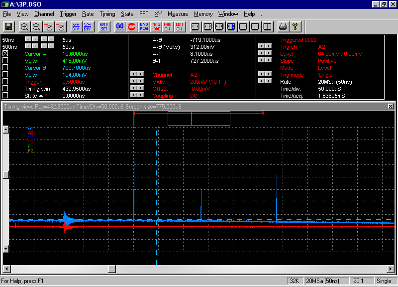

Home Return to Main Page
OUTPUT MONITOR
FROM RW-MOPA 5
Prior to using
for holography

Above is the
output of RW-MOPA version 5 adjusted for triple pulse operation. Measurements
like this give total and individual pulse magnitudes. Yet, from one firing of
the laser to the next, these pulses vary in strength and separation by a small
percentage. If the first pulse is larger, the second may be smaller, but total
yield is similar. In this case, each time division is 50 microsecs, and the
vertical is 22.47mj/div. The first pulse is 107mj, the second pulse is 135usecs
later at 56mj, the third is 84mj and 155 usecs from second. Each pulse is 50
nano seconds long. Another type of measurement is done with two photometers to
establish the relative magnitudes of the object beam and the reference beam
using the dual channel capability of the DSO. Notice Link instrument's new
DSO2102 oscilloscope software. Very nice!!! As a note: calibration of the
vertical is done by getting total pulse energy measured by an accurate thermal
head meter for example while capturing the pulse data and then taking the data,
in this case as 11 total vertical units of the pulses divided into the output
of 247.2mj as measured.